Details
What information helps Core respond with a useful answer instead of a generic reply.
Contact / 01
Contact opens as a clear engineering decision hub: what Core offers, who it helps, why it matters, and which route to take first.
The first screen combines positioning, proof, primary action, and fast internal navigation, so people can act immediately or compare the rest of the contact route with context.
Red-rule technical hero
Select the closest route and Core keeps the next step, proof, and follow-up expectation aligned with reliability and standards.
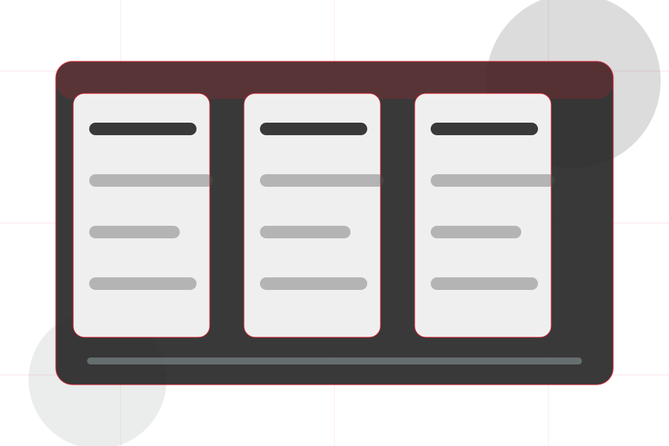
Contact / 02
Enquiry makes the contact path concrete: what to send, how the response works, and what Core needs before visitors ask an engineer.
The section reduces contact friction by naming the channel, expected detail, privacy path, and response expectation instead of dropping visitors into a generic form.
Ask Engineer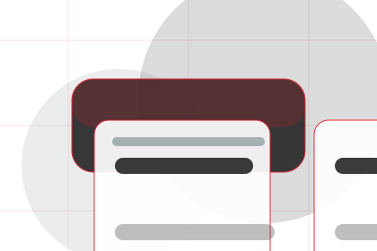
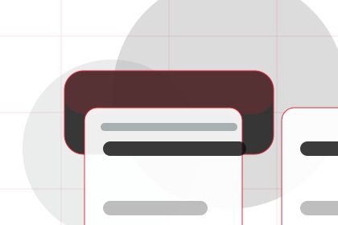
What information helps Core respond with a useful answer instead of a generic reply.
Contact / 03
Upload makes the contact path concrete: what to send, how the response works, and what Core needs before visitors ask an engineer.
The section reduces contact friction by naming the channel, expected detail, privacy path, and response expectation instead of dropping visitors into a generic form.
Ask EngineerWhat information helps Core respond with a useful answer instead of a generic reply.
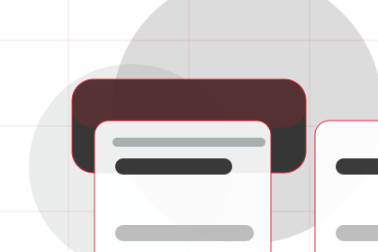
How the visitor should think about response, urgency, location, or availability.
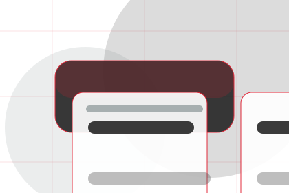
The expected next message keeps scope, timing, and the first practical step clear.
Contact / 04
Scope makes the contact path concrete: what to send, how the response works, and what Core needs before visitors ask an engineer.
The section reduces contact friction by naming the channel, expected detail, privacy path, and response expectation instead of dropping visitors into a generic form.
Ask EngineerWhat information helps Core respond with a useful answer instead of a generic reply.
How the visitor should think about response, urgency, location, or availability.
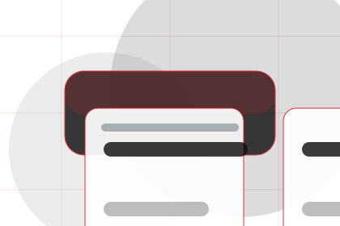
The expected next message keeps scope, timing, and the first practical step clear.
Contact / 05
Call makes the contact path concrete: what to send, how the response works, and what Core needs before visitors ask an engineer.
The section reduces contact friction by naming the channel, expected detail, privacy path, and response expectation instead of dropping visitors into a generic form.
Ask EngineerWhat information helps Core respond with a useful answer instead of a generic reply.
How the visitor should think about response, urgency, location, or availability.
The expected next message keeps scope, timing, and the first practical step clear.
Contact / 06
Proposal makes the contact path concrete: what to send, how the response works, and what Core needs before visitors ask an engineer.
The section reduces contact friction by naming the channel, expected detail, privacy path, and response expectation instead of dropping visitors into a generic form.
Ask EngineerWhat information helps Core respond with a useful answer instead of a generic reply.
How the visitor should think about response, urgency, location, or availability.
The expected next message keeps scope, timing, and the first practical step clear.
Contact / 07
Engineer makes the contact path concrete: what to send, how the response works, and what Core needs before visitors ask an engineer.
The section reduces contact friction by naming the channel, expected detail, privacy path, and response expectation instead of dropping visitors into a generic form.
Ask Engineer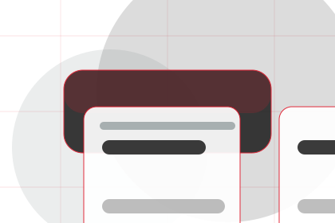
What information helps Core respond with a useful answer instead of a generic reply.
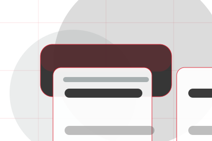
How the visitor should think about response, urgency, location, or availability.
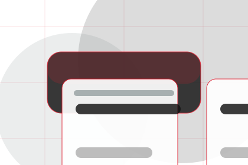
The expected next message keeps scope, timing, and the first practical step clear.
Contact / 08
Response makes the contact path concrete: what to send, how the response works, and what Core needs before visitors ask an engineer.
The section reduces contact friction by naming the channel, expected detail, privacy path, and response expectation instead of dropping visitors into a generic form.
Ask EngineerWhat information helps Core respond with a useful answer instead of a generic reply.
How the visitor should think about response, urgency, location, or availability.
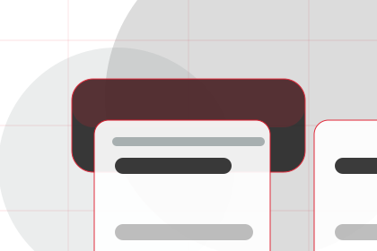
The expected next message keeps scope, timing, and the first practical step clear.
Contact / 09
Submit makes the contact path concrete: what to send, how the response works, and what Core needs before visitors ask an engineer.
The section reduces contact friction by naming the channel, expected detail, privacy path, and response expectation instead of dropping visitors into a generic form.
Ask EngineerWhat information helps Core respond with a useful answer instead of a generic reply.
How the visitor should think about response, urgency, location, or availability.
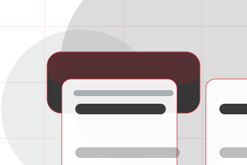
The expected next message keeps scope, timing, and the first practical step clear.
Contact / 10
Core closes the contact route with a clear action, a quick reminder of the value, and a low-friction way to ask an engineer.
Visitors who are ready can use the primary action. Visitors who are still comparing can scan the section links, proof, and support routes before they ask an engineer.
Ask EngineerThe final block keeps the choice simple: act now, compare one more proof route, or send enough detail for a focused response.
Ask Engineer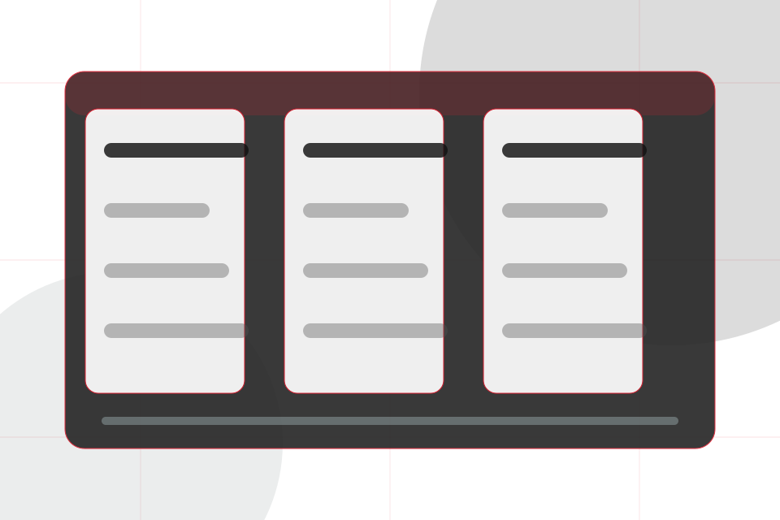
reliability and standards
An engineering authority site with editorial project blocks, red rules, technical proof, and expert enquiry. Contact ends with a direct path to ask an engineer, plus enough context for visitors who still need to compare.
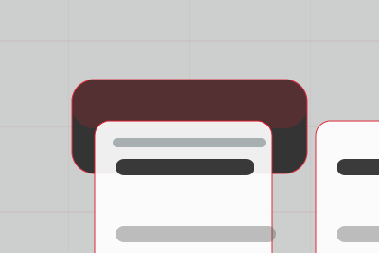
Ask EngineerInformation is provided for planning and should be reviewed for the final client, location, and operating rules.